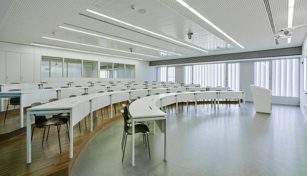
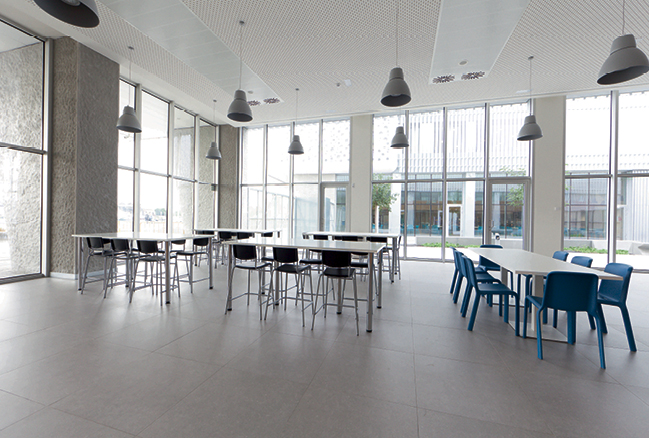

Las clases se desarrollan en la sede de EDEM de
Marina de Empresas
en Valencia, un ecosistema empresarial único que favorecerá y
enriquecerá, sin duda, la experiencia de los alumnos. La Marina es
el entorno más emprendedor y tecnológico de la ciudad.
Además, de estar frente al mar, el campus se encuentra junto a la
aceleradora Lanzadera, en un ambiente joven y profesional.

